Шлях Творця
Мій шлях у розробку — це постійний пошук між чистим креативом, кодом та новітніми технологіями штучного інтелекту. Від перших кроків у 2018 році до концепції повної свободи у вейп-кодингу.
Перша іскра інтересу
Усе почалося з палкого бажання зробити власну мобільну програму на телефон. Я не знав професійних мов розробки, але рішення знайшлося швидко — ноу-код конструктори.
Саме завдяки ноу-код рішенням мені вдалося зібрати свій найперший мобільний браузер. Це було просте, але неймовірно надихаюче досягнення, яке змусило мене рухатися далі.
Занурення в JavaScript та Симулятор Банку
Цей рік став переломним. Мені подарували паперову книгу «JavaScript для дітей». Я буквально «залип» у неї, захоплюючись тим, як логічні рядки коду оживають на екрані.
Почав активно вивчати JS та створювати власні перші проекти. Моїм найбільшим успіхом того періоду став детальний Симулятор Банку, побудований на зв'язці Vanilla JavaScript та бази даних Firebase. Саме тоді почала формуватися моя любов до швидких реактивних стеків.
Figma Enthusiast & Video Making
Я зрозумів, що хороший код ніщо без досконалого дизайну. У цей період я тимчасово зменшив кількість програмування, щоб з головою піти у світ візуального мистецтва.
Став справжнім Figma Enthusiast, вивчав тонкощі UX/UI проектування, правила Pixel Perfect, а також захопився професійним монтажем та зйомкою відео. Цей досвід навчив мене бачити інтерфейси очима художника, що зараз допомагає створювати сайти преміального рівня.
Революція штучного інтелекту
Поява ChatGPT змінила мій підхід до всього. Я увійшов у перший відсоток людей у світі, які почали щодня експериментувати з LLM-моделями.
Я став фанатом великих мовних моделей, тестував кожну нову текстову модель, проводив власні експерименти з промпт-інженерінгом. Саме тоді я почав розробляти плагіни для Minecraft на Java та створювати перші сайти за допомогою ШІ-кодогенераторів, які на той час ще працювали дуже криво і вимагали від мене мільйонів ручних виправлень на JS.
Ера Vibe Coding & Мережа ІІ-Асистентів
Сьогодні я повністю відмовився від ручного написання коду. Чому? Тому що настав час Vibe Coding. Я фокусуюся на архітектурі, ідеях та досконалому промпт-інженерінгу, довіряючи рутинний синтаксис штучному інтелекту.
За останні роки я протестував понад 90% популярних текстових моделей світу. Крім того, я розробив свою особисту мережу автономних ІІ-асистентів. Це моя «зовнішня пам'ять»: вони акуратно записують події мого життя, сни, спогади, помилки та позитивні емоції, структурують їх і допомагають мені бути максимально продуктивним.

У світі щодня виходять космічні інновації у ракетобудуванні чи медицині, але я не можу доторкнутися до них. А ось генерація коду, ШІ, нейромережі та вейп-кодинг — це технології, які виходять сьогодні, і ти одразу можеш взяти та помацати їх руками. Це неймовірне відчуття руху в ногу з часом!